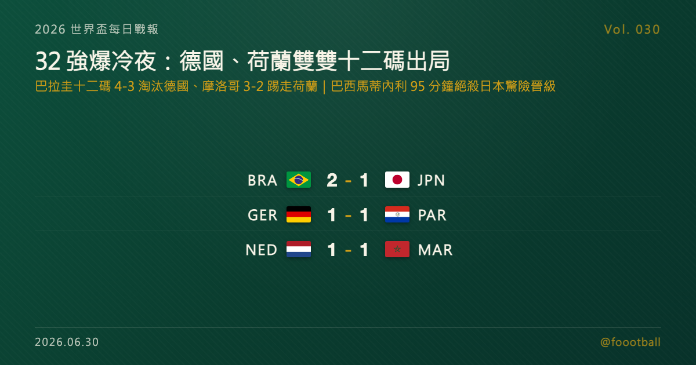

32 強爆冷夜：巴拉圭十二碼淘汰德國、摩洛哥踢走荷蘭；巴西馬蒂內利 95 分鐘絕殺日本驚險晉級
2026 世界盃 32 強淘汰賽接連上演兩場十二碼爆冷：巴拉圭十二碼 4-3 淘汰德國（德國世界盃史上首次輸掉十二碼大戰），摩洛哥十二碼 3-2 踢走荷蘭；巴西則靠馬蒂內利傷停階段絕殺、2-1 逆轉日本，成為三場中唯一沒有進入延長賽、在正規時間內就分出勝負的一隊。

2026 世界盃每日戰報 Vol. 030｜32 強淘汰賽｜三場 R32 賽果 + 16 強對戰更新
§1 即時比分戰報
2026 世界盃 32 強淘汰賽迎來戲劇性的一夜：三場硬仗有兩場踢進十二碼大戰，而且兩場都以爆冷收場。在波士頓近郊的 Gillette Stadium，掌握大半場球權的德國被巴拉圭拖進延長與十二碼，最終十二碼 4-3 落敗——這是德國在世界盃史上第一次輸掉十二碼大戰；在蒙特雷，荷蘭傷停補時遭迪奧普頭槌逼平，加時無功而返後同樣倒在十二碼，摩洛哥 3-2 晉級；荷蘭則連續兩屆世界盃都在十二碼大戰中出局。唯一沒有進入延長賽的，是休士頓的巴西——但他們也是直到傷停階段才靠替補馬蒂內利的左腳絕殺，才從落後逆轉拿下日本。三場過後，16 強名單再添巴西、巴拉圭、摩洛哥三隊。以下是本輪賽果：
| 賽事 | 比分 | 場館 | 焦點 |
|---|---|---|---|
| 🇧🇷 巴西 — 🇯🇵 日本 | 2 - 1 | 休士頓 NRG Stadium | 佐野海舟 29'（JPN）、卡塞米羅 56'、馬蒂內利 90+5'；巴西落後下半場逆轉，馬蒂內利傷停階段絕殺晉級 |
| 🇩🇪 德國 — 🇵🇾 巴拉圭 | 1 - 1（十二碼 4-3 巴拉圭） | 福克斯堡 Gillette Stadium | 恩西索 42'（PAR）、哈弗茨 54'；延長賽塔赫頭球遭 VAR 取消（賽後具爭議），十二碼大戰吉爾兩次關鍵撲救、德國三名主罰失手，世界盃史上首次輸掉十二碼大戰 |
| 🇳🇱 荷蘭 — 🇲🇦 摩洛哥 | 1 - 1（十二碼 3-2 摩洛哥） | 蒙特雷 Estadio Monterrey | 加克波 72'、迪奧普 90+1'（MAR）；門將布努撲出薩默維爾的十二碼、薩伊巴里踢進致勝球，摩洛哥晉級 |
一夜之間兩支歐洲傳統強權出局：四屆世界盃冠軍德國、以及上屆四強荷蘭，雙雙倒在十二碼。德國的出局尤其震撼——這是他們在世界盃舞台上第一次輸掉十二碼大戰，對德國而言也是又一次遠早於預期的世界盃退場。摩洛哥則延續 2022 年的黑馬氣勢，再次在大賽淘汰賽踢走歐洲球隊，16 強將對上同樣晉級的東道主加拿大。§2 整理目前 16 強對戰圖與剩餘 R32 賽程，§4 預告今日兩篇焦點特刊——巴西的逆轉與德國的崩盤，各自值得拆得更深。
§2 排行榜區：32 強淘汰賽進度 + 16 強對戰圖 + 金靴榜
本屆 48 隊擴軍制，小組賽已於 6 月 27 日全部踢完，32 強單敗淘汰賽 6 月 28 日開打。截至本輪，前四場 R32 賽果如下：
| 場次 | 對戰 | 結果 | 晉級 |
|---|---|---|---|
| R32-1 | 🇿🇦 南非 — 🇨🇦 加拿大 | 0 - 1 | 🇨🇦 加拿大 |
| R32-2 | 🇩🇪 德國 — 🇵🇾 巴拉圭 | 1 - 1（十二碼 4-3） | 🇵🇾 巴拉圭 |
| R32-3 | 🇳🇱 荷蘭 — 🇲🇦 摩洛哥 | 1 - 1（十二碼 3-2） | 🇲🇦 摩洛哥 |
| R32-4 | 🇧🇷 巴西 — 🇯🇵 日本 | 2 - 1 | 🇧🇷 巴西 |
16 強對戰圖（逐步成形）——四強晉級者中，唯一已湊齊雙方的對位是加拿大與摩洛哥：
| 16 強對戰 | 狀態 |
|---|---|
| 🇨🇦 加拿大 — 🇲🇦 摩洛哥 | ✅ 對戰確定（東道主對黑馬） |
| 🇵🇾 巴拉圭 — 〈法國／瑞典 勝者〉 | 待 6/30 R32（法國 vs 瑞典）產生對手 |
| 🇧🇷 巴西 — 〈象牙海岸／挪威 勝者〉 | 待 6/30 R32（象牙海岸 vs 挪威）產生對手 |
剩餘 R32 賽程——淘汰賽接下來每天 3 場，至 7 月 3 日全部 16 場踢完、16 強對戰圖底定：
| 日期 | 對戰 | 城市 |
|---|---|---|
| 6/30 | 法國 — 瑞典 | 東盧瑟福 |
| 6/30 | 象牙海岸 — 挪威 | 達拉斯 |
| 6/30 | 墨西哥 — 厄瓜多 | 墨西哥城 |
| 7/1 | 英格蘭 — 民主剛果 | 亞特蘭大 |
| 7/1 | 美國 — 波士尼亞 | 舊金山灣區 |
| 7/1 | 比利時 — 塞內加爾 | 西雅圖 |
| 7/2 | 葡萄牙 — 克羅埃西亞 | 多倫多 |
| 7/2 | 西班牙 — 奧地利 | 洛杉磯 |
| 7/2 | 瑞士 — 阿爾及利亞 | 溫哥華 |
| 7/3 | 阿根廷 — 維德角 | 邁阿密 |
| 7/3 | 哥倫比亞 — 迦納 | 堪薩斯城 |
| 7/3 | 澳洲 — 埃及 | 達拉斯 |
金靴榜（小組賽收官時）——梅西（Lionel Messi）以本屆 6 球獨居榜首；姆巴佩、登貝萊、維尼修斯、哈蘭德各 4 球並列追趕；維薩、凱恩等多人 3 球。本輪三場淘汰賽的進球者（卡塞米羅、馬蒂內利、佐野海舟、恩西索、哈弗茨、加克波、迪奧普各添一球）尚未改變榜首格局，金靴爭奪要等淘汰賽深入才會重新洗牌。完整分組積分、射手榜與即時 16 強對戰圖可見站上「戰況中心」：https://foootball.twtools.cc/standings/
§3 賽事摘要
巴西 2-1 日本（R32）——一場巴西踢得並不放心的勝利。日本上半場用紀律嚴整的封鎖把巴西逼到落後：佐野海舟（Kaishu Sano）第 29 分鐘遠射破門，日本帶著 1-0 進入中場。下半場安切洛蒂改打更直接的邊路與禁區壓迫，卡塞米羅（Casemiro）第 56 分鐘扳平。眼看比賽要拖進加時，替補登場的馬蒂內利（Gabriel Martinelli）在傷停階段（官方計時 95:00）接布魯諾·吉馬良斯傳球、左腳低射中柱入網，完成 2-1 絕殺。這也是 1966 年以來世界盃淘汰賽（不含加時）有紀錄的最晚致勝球。巴西晉級 16 強，將對上象牙海岸與挪威之間的勝者。
德國 1-1 巴拉圭（R32，巴拉圭十二碼 4-3 晉級）——本屆截至目前最大的爆冷。德國長時間掌握球權，卻被巴拉圭極窄的低位防線拖進延長與十二碼。巴拉圭恩西索（Julio Enciso）第 42 分鐘頭球先開紀錄，哈弗茨（Kai Havertz）下半場第 54 分鐘頭槌扳平；延長賽德國中衛塔赫（Jonathan Tah）一記角球頭球破門，卻因主裁經 VAR 認定進攻方干擾門將而被取消，這次判決賽後引發爭議，也成為比賽轉折點。十二碼大戰中，巴拉圭門將奧蘭多·吉爾（Orlando Gill）兩次關鍵撲救、化解哈弗茨與沃爾特馬德的主罰，塔赫又把球射飛，巴拉圭 4-3 勝出。這是德國隊史在世界盃舞台上第一次輸掉十二碼大戰，對德國而言又是一次遠早於預期的世界盃退場。
荷蘭 1-1 摩洛哥（R32，摩洛哥十二碼 3-2 晉級）——另一場踢到最後一刻的爆冷。荷蘭加克波（Cody Gakpo）第 72 分鐘破門領先，眼看就要拿下比賽，摩洛哥中衛迪奧普（Issa Diop）卻在傷停補時（第 90+1 分鐘）頭槌破網逼平，將比賽拖進加時。延長賽兩隊均無建樹，再次進入十二碼。摩洛哥門將布努（Yassine Bounou）撲出薩默維爾（Crysencio Summerville）罰出的十二碼，最後由薩伊巴里（Ismael Saibari）一蹴而就踢進致勝球，摩洛哥 3-2 勝出。荷蘭連續兩屆世界盃都在十二碼大戰中出局；摩洛哥則延續 2022 年闖進四強的黑馬底氣，16 強將與東道主加拿大交手。
§4 焦點觀察：今日雙特刊預告——巴西的森巴救贖、德國的控球神話崩盤
同一個比賽日，兩場最受矚目的對決各自值得一篇深度特刊。
第一篇關於巴西。 2-1 逆轉日本看起來像球星個人能力，拆開來看其實是一堂淘汰賽戰術課。日本用 3-4-3 的局部封鎖把維尼修斯切離比賽、把巴西的中路直塞堵死，上半場一度讓五星巴西陷入落後；安切洛蒂中場後把問題重新定義，少一點中路短傳、多一點邊路寬度與禁區物理壓迫，才換來卡塞米羅的扳平與馬蒂內利第 95 分鐘的絕殺。特刊〈安切洛蒂的邊路修正，與 95 分鐘的森巴救贖〉拆解日本如何封住巴西、巴西又如何在下半場改變比賽，以及這場驚險逆轉對巴西後續淘汰賽的真正警訊。
第二篇關於德國。 這不是一場「運氣不好的爆冷」，而是巴拉圭把德國的優勢變成了負擔。德國掌握更長時間的球權、創造更多進攻回合，卻始終穿不透巴拉圭那套極窄、極有紀律的 4-5-1 低位區域防守——控球變成循環，傳導變成等待，焦慮被一點一點推高。120 分鐘 1-1，十二碼 4-3，德國世界盃史上首次輸掉十二碼大戰。特刊〈十二碼 4-3，低位防守如何擊沉日耳曼控球神話〉拆解巴拉圭如何用空間紀律抵消控球、德國為何缺少禁區支點，以及這場爆冷對現代防守美學的意義。
📖 特刊全文（已上線）： ・巴西／日本：https://foootball.twtools.cc/articles/worldcup-special-2026-06-30-brazil-japan/ ・德國／巴拉圭：https://foootball.twtools.cc/articles/worldcup-special-2026-06-30-paraguay-germany/
常見問題
德國真的被淘汰了嗎？怎麼輸的？
是的。德國在 32 強對巴拉圭 120 分鐘踢成 1-1，最終在十二碼大戰以 3-4 落敗出局。這是德國在世界盃史上第一次輸掉十二碼大戰。比賽中德國長時間控球占優，恩西索為巴拉圭先開紀錄、哈弗茨頭球扳平；延長賽塔赫的頭球破門遭 VAR 取消（賽後具爭議），成為關鍵轉折，最終巴拉圭門將吉爾在十二碼大戰兩次關鍵撲救、德國三名主罰失手，淘汰德國。
比分明明是 1-1，為什麼說巴拉圭、摩洛哥晉級？「十二碼 4-3」是什麼意思？
因為這是淘汰賽（單場淘汰）。90 分鐘平手要踢 30 分鐘延長賽，延長賽仍平手就踢十二碼（PK）大戰分勝負。德國 1-1 巴拉圭、巴拉圭十二碼 4-3 勝出；荷蘭 1-1 摩洛哥、摩洛哥十二碼 3-2 勝出。比分欄的「1-1」是 120 分鐘的結果，括號內才是十二碼勝負，所以晉級的是十二碼贏的一方。
巴西的絕殺球是第幾分鐘？真的破紀錄嗎？
馬蒂內利的絕殺出現在傷停階段、官方計時約第 95 分鐘（90+5）。據統計，這是 1966 年以來世界盃淘汰賽（不含加時賽）有紀錄的最晚致勝球。巴西也因此在正規時間內 2-1 逆轉日本、驚險晉級 16 強。
Tags: 世界盃, 2026世界盃, 德國, 巴西, 摩洛哥, 巴拉圭, 淘汰賽